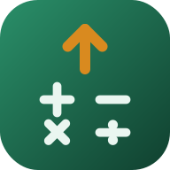
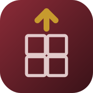

biosprout
子ども用に作った学習アプリを公開しています。
ブラウザで開くだけで、すぐに使えます。
「今日の〇〇」を押すだけで、その日にやることが決まります。
中学の基本から英検準1級レベルまで 7,972語。6つのレベルから選んで、フラッシュカード・4択・書き取り・リスニングなど6通りの方法で覚えられます。教科書やテスト範囲の単語を自分で追加することもできます。
物理・化学・生物・地学の4分野を398問。基礎・標準・入試の3段階から選べます。用語だけでなく「なぜそうなるか」を問う問題や、実験の考察問題も入っています。全問に解説つき。
「理科の計算」は、答えを自分で書く形式です。オームの法則、密度、圧力、湿度、化学変化の質量比など21種類を、その場で数字を作って出題します。まちがえた種類が次に多めに出ます。

加減乗除の100本ノックをはじめ、九九の逆引き、補数、正負の数、工夫して計算、概算の8モード。問題は毎回その場で作られるので、やるたびに新しい問題が出ます。数と計算にまつわる豆知識を集める図鑑もあります。まちがえたパターンを覚えていて、終わったあとに「くり下がりのひき算 2/4」のようにパターンごとの成績が出ます。

漢字・語彙・文法・古典の4分野を280問。読み書き、同音異義語、四字熟語やことわざ、品詞と敬語、歴史的仮名遣いや係り結びまで。まちがえやすい言葉の本来の意味も扱います。
4択とは別に語彙295語を収録しています。漢字と四字熟語は読みを自分で書く形式、ことわざ・慣用句・古文単語はめくって覚えるカードで、それぞれの言葉に合った練習ができます。
地理・歴史・公民の3分野を415問。あわせて、できごとを古い順に並べる「年代整序」を55セット収録しています。日本と世界のできごとを混ぜたセットもあり、歴史の流れを縦につかむ練習ができます。
用語の暗記に加えて、時差や縮尺の計算、制度の比較など、考えて答える問題を多く入れています。
☀️ 今日の〇〇
どのアプリにも、その日のぶんだけを出す入口があります。開いて1回押せば始まります。
中身は自動で決まります。苦手なもの、そろそろ忘れそうなもの、まだ解いていないものをまぜて出します。何日あいても数は変わらないので、たまった量に追われることがありません。まちがえたものは、日をおいてまた出てきます。
MATH UP! だけは少し違って、まちがえた問題そのものではなくまちがえたパターンを覚えています。「25 × 12」でつまずいたら、翌日は「25 × 8」が出ます。
✍️ 色々な答え方
覚えたいことによって様々な答え方が可能です。
計算と理科の計算は、その場で数字を作っています。やるたびに新しい問題が出ます。
📲 ホーム画面に置くと便利です
アイコンから開くと全画面で使えて、電波がないところでも動きます。
iPhone・iPad
Safari で開き、下の共有ボタン（□に↑）から「ホーム画面に追加」を選びます。
Android
Chrome のメニュー（⋮）から「アプリをインストール」または「ホーム画面に追加」を選びます。
iPhone では、あとから追加すると学習の記録が引き継がれないことがあります。使い始めるときに追加しておくのがおすすめです。
ℹ️ このアプリについて
広告・課金・アカウント登録はありません。学習の記録は使っている端末の中だけに保存され、外部に送られることはありません。
続けたくなる仕掛けとして、レベルと称号、実績、豆知識を集める図鑑が入っています。図鑑には英単語の語源、科学者の逸話、歴史のエピソードなどが収録されていて、読み物としても楽しめます。
個人が子どものために作ったものです。サポートや不具合対応のお約束はできませんので、ご了承のうえお使いください。
📄 ライセンス
Beerware License (Revision 42) で公開しています。この注意書きを残していただければ、コピー・改変・再配布は自由です。
/* * ------------------------------------------ * "THE BEER-WARE LICENSE" (Revision 42): * Yuichi Tanaka wrote this file. As long as you retain this notice you * can do whatever you want with this stuff. If we meet some day, and you * think this stuff is worth it, you can buy me a beer in return. * ------------------------------------------ */
「この注意書きを残しておいてくれるなら、あとは何をしてもらってもかまいません。いつか会うことがあって、これに価値があると思ったら、お礼にビールをおごってください」という意味です。